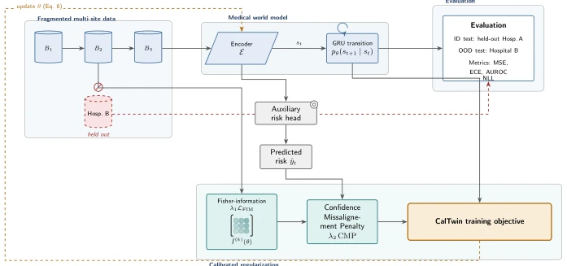
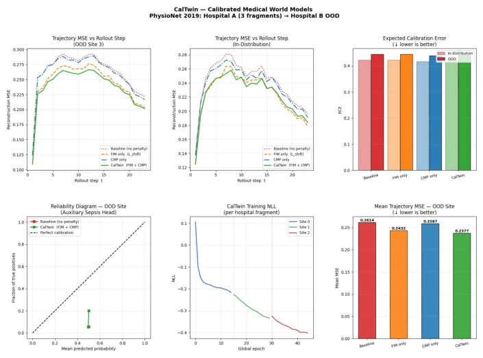

This paper attempts to address two persistent issues in medical world models with a regularization scheme: distribution shift caused by data fragmentation and inflated prediction confidence. The authors package the Fisher Information Matrix (FIM) and Confidence Misalignment Penalty (CMP) into CalTwin, which sounds sexy, after all, unified handling is a buzzword in the academic community. But after reading the whole paper, it feels like the theory is substantial, but the experiments are skeletal. On PhysioNet, the performance is acceptable, OOD MSE dropped by 9.1%, but on eICU it crashed directly; FIM didn't even help, and using CMP alone was actually better. More embarrassingly, they didn't dare to perform closed-loop autoregressive evaluation, only using teacher-forced results to prove calibration ability, which is like boasting about national college entrance exam ability using mock exam scores. Moreover, it is all tabular data, not touching real medical imaging; for medical scenarios emphasizing digital twins, this is still ten thousand miles away from clinical implementation. However, daring to publish contradictory results from two datasets is better than those papers that only report good news, at least honest.
Medical world models aim to learn latent representations of patient physiological states and state transition functions, supporting tasks from diagnosis to digital twin treatment planning [8]. However, clinical deployment faces two major threats: first is covariate shift, due to training data being scattered across different hospitals, scanners, and time periods, leading to feature distribution differences [14]; second is confidence misalignment, where models are often overconfident in high-risk areas during multi-step prediction [2]. Existing methods struggle to solve both problems simultaneously: importance weighting based on density ratios is infeasible when the deployment distribution is unknown [12]; post-processing calibration (such as temperature scaling) worsens calibration under distribution shift [13]. Additionally, federated learning or batch sequential training exacerbates the fragmentation problem, making traditional parameter space regularization difficult to apply directly. Although FIcsR [5] and CalShift [4] have verified the effectiveness of FIM and CMP in classification tasks respectively, no work has yet applied them jointly to the latent dynamic predictors of medical world models. Therefore, a lightweight, unified regularization objective that does not require access to the deployment distribution is needed to simultaneously improve the model's generalization and calibration.
The core of CalTwin is constructing a joint training objective containing three parts: transition log-likelihood, FIM offset penalty, and CMP calibration penalty. The overall pipeline is shown in Figure 1, data is input sequentially by hospital segments B1 to BK into the shared encoder E and GRU transition predictor fθ. 1. FIM offset penalty: targeting cross-segment covariate shift, the authors follow the FIcsR [5] approach, using the empirical Fisher Information Matrix (FIM) to approximate the KL divergence of the parameter distribution. Accumulate FIM across segments via Exponential Moving Average (EMA) to form a global prior, penalizing the degree to which current parameters deviate from historical optimal parameters. This avoids the need to estimate density ratios, requiring only current segment gradients for incremental updates. 2. CMP calibration penalty: targeting confidence misalignment of autoregressive trajectories, the authors apply CMP [4] to auxiliary discrete heads (such as sepsis risk classifiers). Since continuous outputs are difficult to define CMP directly, calibration signals from the auxiliary head are propagated to continuous predictions via the shared encoder. CMP shifts probability mass from incorrect classes to the correct class, without requiring temperature scaling or calibration sets. 3. Joint optimization: the total objective LCalTwin balances transition accuracy, offset robustness, and calibration. Hyperparameters λ1, λ2 control the trade-off, but were fixed in experiments rather than grid search.

Fig. 1. The CalTwin training pipeline. Sequential hospital fragments B1, B2, B3 train the shared encoder E and GRU transition predictor (Sec. 3.1); a held-out hospital is used only for OOD evaluation. st also feeds an auxiliary risk head penalised by CMP (Sec. 3.3); a diagonal Fisher-information accumulator anchors encoder/transition parameters against prior fragments (Sec. 3.2). Both penalties and the transition log-likelihood combine into the CalTwin objective (Eq. 6), whose gradient updates θ (dashed loop).
Experiments were conducted on PhysioNet 2019 Sepsis and eICU-CRD Demo, evaluating OOD generalization and calibration. In PhysioNet, CalTwin reduced OOD MSE by 9.1% (FIM contributed 7.0%), ECE reduced by 0.7%. But eICU results showed a reversal: FIM did not improve OOD MSE, CMP alone was better than CalTwin. Auxiliary head AUROC failed OOD on PhysioNet (0.4754), but was significantly higher than random on eICU (0.84). Main findings include: FIM dominates MSE improvement but is not dataset-invariant; CMP calibration gain is small and interacts with FIM; evaluation is based only on teacher-forced single-step prediction, closed-loop autoregressive error not verified. Experiments exposed the instability of the method under different data distributions, and did not involve medical imaging.

Fig. 2. Empirical results on PhysioNet 2019 (single seed), all four methods of Table 1. Top: teacher-forced next-step MSE per rollout step (OOD, ID); ECE by method (ID vs. OOD). Bottom: reliability diagram for the auxiliary sepsis head, OOD, Baseline vs. CalTwin; CalTwin’s training NLL across the three sequential fragments (dotted lines mark fragment boundaries); mean OOD MSE by method (= Table 1’s MSE-OOD column, graphically).